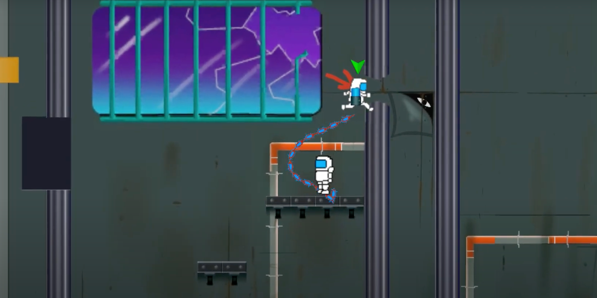

Chain Gang


- 
Chain Gang was a group project from the first class in MSU's Game Minor; MI445. This was the first group project of the class and the first attempt at making fleshed out game. My primary role at the time was as level and overall game designer. I designed our tutorial level and levels 1 - 4. My main goal for the level design was to harken back to the flash platformer games I had played as a kid and try to recreate that nostalgia while creating fun concepts that would highlight our main mechanic, controlling two characters who are linked together. I would start with the chain-linked character as a base and then think of interesting ways I could have them traverse the levels other than walking; having them swing across chasms or carry the other character using the chain. Once I had a "gimmick" for the level, I would use the environment to play with that gimmick in different ways. I would sketch the prototype level on paper and then play through it using my finger or some other small object to see if I felt it was fun or would fit the game. I also was responsible for various programming and art feats in the game. These mostly consisted of small scripts and sprites used for puzzle or UI functionality. Some examples included our tutorial text system and lever sprite.
Chain Gang was an incredibly successful first attempt for both my team and I. It was awarded Best Game of the nine other games in the running for that round of game projects in addition to Most Fun and Most Playable by our class, our professors, and a separate panel of judges from outside our class.
Play Chain Gang Here